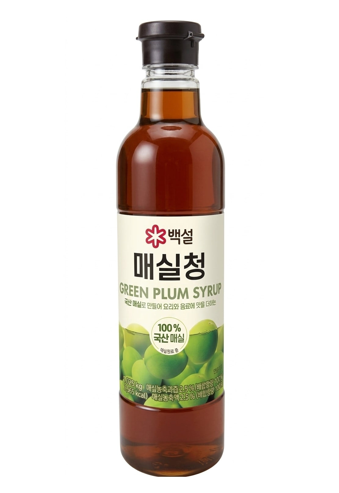
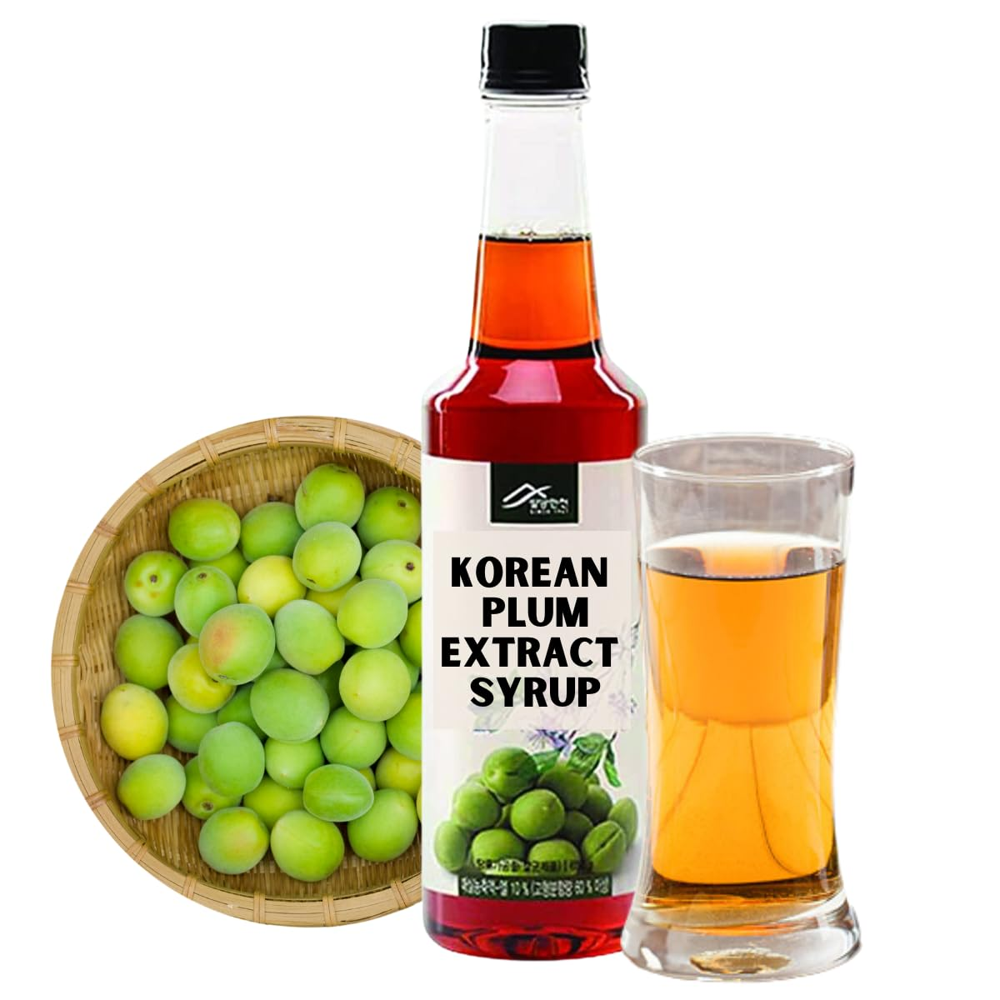
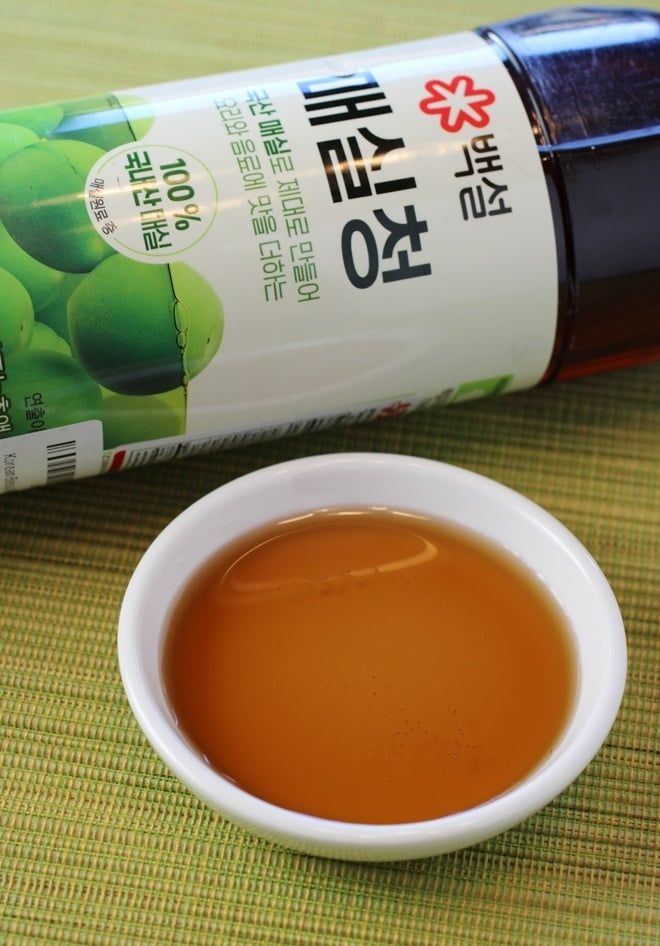

<div> <table style="border-collapse: collapse; width: 99.9809%;" border="1"><colgroup><col style="width: 49.9522%;"><col style="width: 49.9522%;"></colgroup> <tbody> <tr> <td> <div><span style="font-size: 14pt;"><strong>Beksul (Maesil Chung) <span>Sirop de prune verzi</span></strong></span></div> <div><span style="font-size: 14pt;"><strong>1,025kg</strong></span></div> <div><span style="font-size: 14pt;">Siropul de prune verzi Beksul (Maesil Chung) la sticla generoasa de 1.025 kg este secretul bucatariei coreene! Obtinut din prune verzi 100% autohtone, ofera un echilibru perfect dulce-acrisor. Este ideal pentru a indulci sosuri, marinade de carne sau pentru a prepara bauturi racoritoare si ceaiuri calde.<br>Pentru bauturi, 2 parti de sirop la 8 parti apa (rece sau calda).</span></div> </td> <td></td> </tr> <tr> <td></td> <td><span style="font-size: 14pt;">Acest sirop autentic se obtine prin metoda traditionala coreeana: prunele verzi proaspete sunt macerate in zahar timp de 100 de zile. Prin osmoza, fructele isi lasa tot sucul aromatic, fiind apoi complet indepartate. Ceea ce ramane este un extract pur, dulce-acrisor, gata de folosit ca indulcitor natural sau remediu digestiv.</span></td> </tr> <tr> <td><span style="font-size: 14pt;">Descopera textura fina si culoarea chihlimbarie a siropului autentic de prune verzi Beksul. Cu o consistenta densa si un parfum fructat irezistibil, se dizolva perfect in preparate. Adauga o nota exotica si rafinata preparatelor tale asiatice, dressingurilor de salata sau limonadelor de vara!</span></td> <td></td> </tr> </tbody> </table> </div>